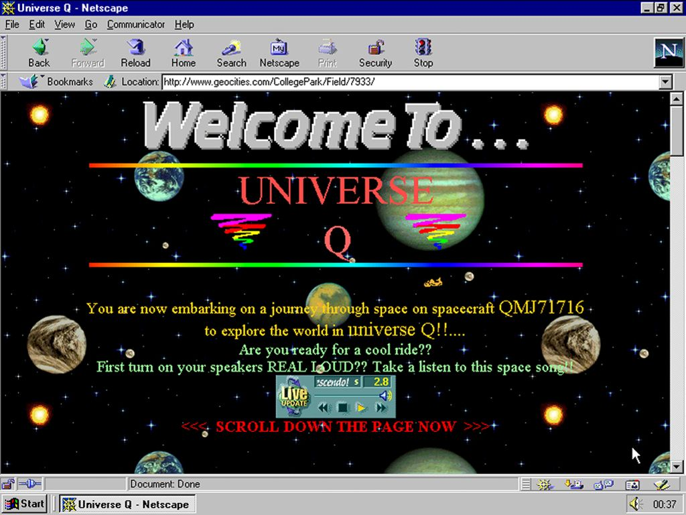
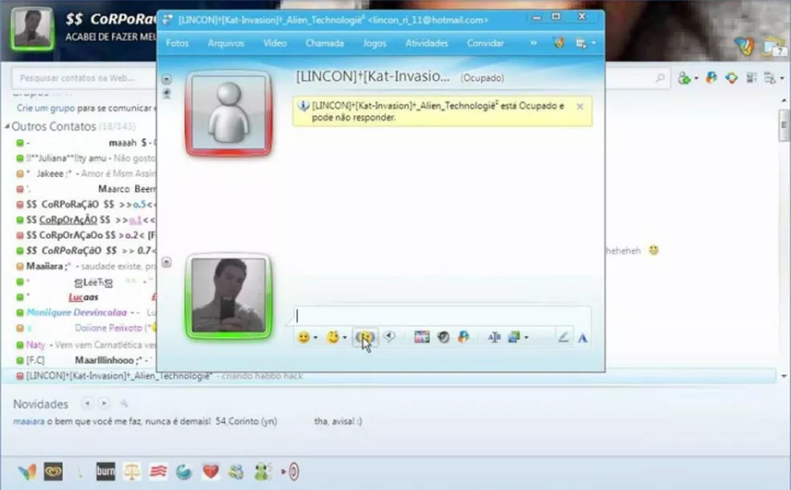

Desde o inicio, a internet sofreu várias evoluções, partindo de algo relativamente simples e se transformado na rede de conexão mundial que conhecemos hoje em dia. Podemos dividir essas evoluções em algumas classificações, nomeadas como Web 1.0; 2.0 e 3.0.
O termo Web tem como origem a tecnologia World Wide Web (WWW), que se trata da tecnologia de hypertext presentes em documentos e links na internet, mas atualmente, o modo em que o termo é utilizado pode ser considerado errôneo para alguns, pois o mesmo é usado para se referir ao conjunto geral de tecnologias que conectam toda a internet.
O Web 1.0 é o estágio inicial e primordial da internet, podendo ser chamada de “O Mundo Novo”. Período que se estende pela década de 1990, caracterizado pela falta de conteúdos não animados e pouca interação com o usuário, sendo utilizada predominantemente em ambientes acadêmicos e de pesquisa. Também existia uma alta dificuldade de criar, modificar e realizar manutenções em sites, o que impedia de que qualquer site fosse criado sem antes uma autorização.
O Web 2.0 foi o resultado de diversas evoluções científicas e tecnológicas na época. É caracterizado pelo início da aplicação da interação do usuário com a plataforma e o conteúdo. Foi marcada pelo surgimento das redes sociais que conectavam inúmeros usuários ao mesmo tempo em um único lugar. Um fato a ser mencionado é que na web 2.0 as plataformas são centralizadas, prezando sempre pelo lucro e desempenho da empresa ao usuário.
Já o Web 3.0 é a internet como conhecemos nos dias de hoje. É a junção de todo o conhecimento e tecnologia que possuímos sobre a internet, o que torna a internet o maior meio de comunicação entre diferentes pontos. Nesse período temos a descentralização das plataformas, assim integrando todas as tecnologias como imersão, pagamentos via criptomoedas sendo aceitas na maioria das compras online, maior liberdade do usuário e melhor acesso à informação.